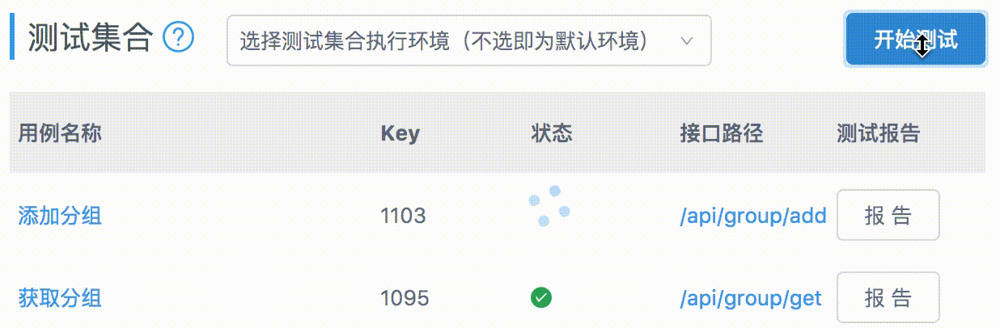
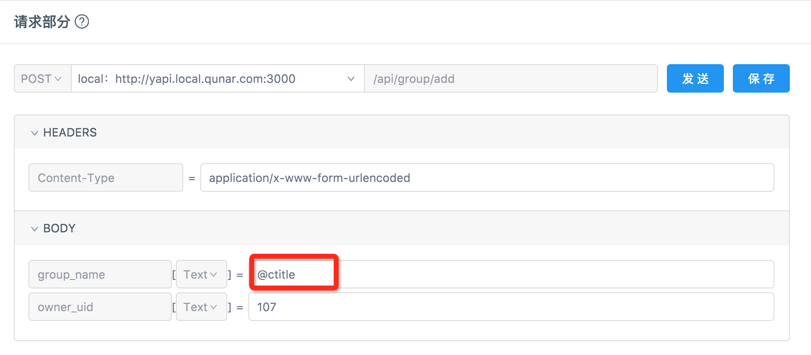
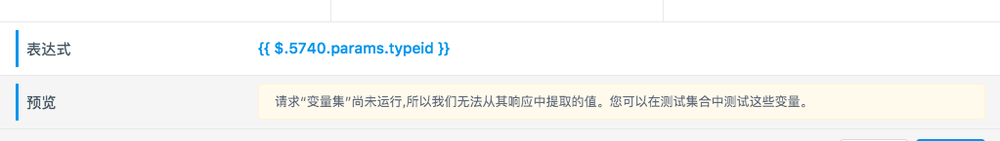

自动化测试
Web 应用通常是前后端分离开发的，后端提供调用的接口，前端使用接口返回 json 数据渲染到 UI，接口测试就是保证后端接口的数据正确性。
对于很多团队，接口测试就是手动运行接口，肉眼比对接口返回的数据，这样的操作流程效率低下，容易出错。使用 YApi 只需要在可视化 GUI 下，配置下每个接口的入参和对 RESPONSE 断言，即可实现对接口的自动化测试，大大提升了接口测试的效率。自动化测试实践
测试列表
在测试列表可以看到每个测试用例的 key,还有 开始测试、报告等功能
点击开始测试会按照 case 定义的参数从上往下一个一个进行测试，如果顺序有问题，可以拖动调整
测试完成之后，点击报告查看该次请求的结果
编辑测试用例
Mock 参数
Mock 参数每次请求都会生成随机字符串
变量参数
YApi 提供了强大的变量参数功能，你可以在测试的时候使用前面接口的 参数 或 返回值 作为 后面接口的参数，即使接口之间存在依赖，也可以轻松 一键测试~
Tips: 参数只能是测试过程中排在前面的接口中的变量参数
格式：
$.{key}.{params|body}.{path}
例如：现有两个接口，分别是“导航标题”和“文章列表”
文章列表接口需要传参数: 当前标题(id)，而这个 id 需要通过 导航标题 的返回值获取，这时应在 文章列表 的参数输入框中根据前者的 key 找到对应 id。
导航标题 的参数和返回值有如下结构：

则 文章列表 的参数可以如下配置：

其中 $. 是使用 动态变量 的标志，$.269.params 即表示 key 值为 269 用例的请求参数，$.269.body 即表示 key 值为 269 用例的返回值。
如果 requestBody 是 json 格式也可以在 json 中写变量参数，如下图：

Tips: 上下拖动测试集合的列表项可以调整测试的顺序。
目前 yapi 中的query，body,header和pathParam的输入参数已经支持点击选择功能。无需自己填写表达式，只需在弹窗中选择需要展示的表达式即可。 输入选项包括常量，mock数据，在测试集合中也支持变量选择。具体用法：单击编辑按钮打开表达式生成器，点击需要的数据创建表达式，这里也可以实时查看表达式结果。

Tips: 在测试集合中插入变量参数可以会出现下图的提示信息，这是正常现象。因为该参数只能在各个接口顺序执行的时候才能拉到变量参数中的值
自动化测试
点击自动化测试，出现如下弹窗，用户访问该 url 就可以获取当前测试用例的所有测试结果


断言
可通过 js 脚本写断言，实现精准测试，在接口用例页面点击 Test 编辑。
公共变量
1.assert
断言函数，详细 api 可查看 document
常用 api:
-
assert(value)
判断 value 是否为 truth, 例如 assert(1) 通过， assert(0) 不通过，只要 value 不是 null, 0, false 等值验证通过
-
assert.equal(actual, expected)
判断 actual 是否等于 expected，例如 assert(1, 1)通过
-
assert.notEqual(actual, expected)
判断 actual 是否不等于 expected
-
assert.deepEqual(actual, expected)
假设： actual = {a:1} 是一个对象，即便 expected = {a:1}，如果使用 assert.equal 可能也是不相等的，因为在 js 引用的只是对象的一个指针，需要使用 assert.deepEqual 比较两个对象是否相等
-
assert.notDeepEaual(actual, expected)
深度比较两个对象是否不相等
2.status
http 状态码
3.params
http request params, 合并了 query 和 body
4.body
返回 response body
5.header
返回 response header
6.records
记录的 http 请求信息，假设需要获取 key 为 555 的接口参数或者响应数据，可通过 records[555].params 或 records[555].body 获取
7.log
log（message） 函数,调试时使用，log 信息仅仅在断言失败后打印
示例
assert.equal(body.errcode, 0)
assert.equal(body.data.group_name, 'testGroup')
assert.equal(status, 200)